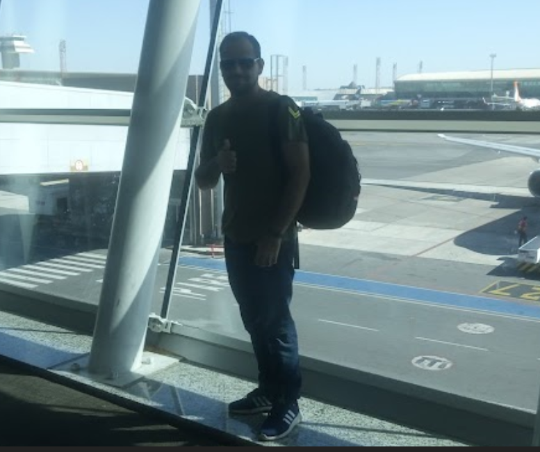

Olá, eu sou Valdinei C. Fonseca
Quem sou eu ?
Olá me chamo Valdinei, sou natural de Governador Valadares, Minas Gerais. Trabalho com manutenção de
computadores, e estudo análise desenvolvimento de sistemas.Meu principal objetivo hoje é ser programador. Todas
minhas energias e foco estão empenhadas nesta área no momento. O DevClub é um incentivo que veio para agregar
nesta jornada pois a interação e depoimentos com experiências ajudam muito nesta jornada a manter o foco, também
sendo mais assertivo vendo por quais caminhos e situações cada um passou.
Minhas características e objetivos:
-
Desde de criança mexo com tecnologia.
Meu primeiro contato foi com Qbasic em DOS e Clipper lá em 1900 la vai bolinha, porém acabei fazendo curso
tecnico e atuando na área de manutenção de computadores. Hoje estudo para entrar na área de programação.
-
Conseguir uma oportunidade como programador.
-
Ajudar os familiáres a partir do momento que estiver em um bom emprego.
-
Ajudar as pessoas conhecidas com meu conhecimento para engajarem em sua caminhada.

Pessoas que eu gostaria que estivessem no CodeClub:
-
Geovanne formamos curso tecnico juntos.
-
Meu conhecido Ricardo atuante na área de programação.
-
Breno que já foi meu parceiro de trabalho.
Minha Foto

Visitantes: